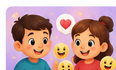

Reconocimiento
Identificación de expresiones y emociones.

Una experiencia para reconocer emociones, conversar sobre ellas y promover empatía de forma lúdica.
Identificación de expresiones y emociones.
Comprensión de cómo pueden sentirse otras personas.
Punto de partida para hablar de emociones en familia.
La demo interactiva de Emociones en Juego se conectará aquí cuando incorporemos el archivo final de la aplicación.
Explorar otras apps